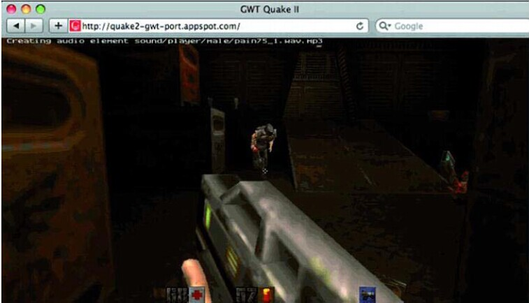

HTML5
HTML5 Presentation
by Gonghe Shi
What is HTML5?
HTML5 is the 5th revision of the HTML standard as proposed by Hypertext Application Technology Working group and adopted by W3C.
HTML stands for Hypertext Markup Language
- Hypertext:
– Text that you click to jump from document to document. This is a reference to the ability of Web pages to link to one another. - Markup:
– Tags that apply layout and formatting conventions to plain text. Literally, the plain text is “marked up” with the tags - Language:
– A reference to the fact that HTML is considered a programming language.
History of HTML
- Before HTML5
- History of HTML5
Before HTML5
- 1991. HTML
- 1994. HTML2
- 1996. CSS1 + Javascript
- 1997. HTML4
History of HTML5 - 1
- 2004. WHATWG was founded, with members from APPLE, the Mozilla Foundation, and Opera Software, sets out to develop HTML5.
- 2006 Oct. W3C decides to stop working on XHTML and instead begins collaborating with WHATWG to envolve HTML as a technology.
- 2008. First version of HTML5 is published.
- 2008. Firefox 3 becomes HTML5 compatible.
- 2010 Jan. Youtube offers HTML5 video player.
- 2010 April. Steve Jobs "trashes" Flash in an open letter.
- 2010 May. Scribd documents switch to HTML5
- 2010 Dec. Chrome opens its web store in HTML5. Making non-Apple web apps easy to buy on tablets.
History of HTML5 - 2
- 2011 March. Disney buys HTML5 gaming start-up.
- 2011 July. Pandora begins moving to HTML5.
- 2011 Aug. Amazon creates a new web-based HTML5 version of the Kindle eBook reader app.
- 2011 Aug. Twitter rolls out new HTML5 version for iPad.
- 2011 Sept. 34% of Alexa's Top-100 trafficked websites are using HTML5.
- 2011 Nov. Adobe stops making Flash for mobile devices.
- 2012 April. Flickr gets a new HTML5 uploader(expedites uploading large files).
- 2012 June. LinkedIn has hadd mobile apps since 2008 but in 2012 sawt he launch of its 95% HTML5 native iPad app. The app has been praised for its clean, modern design.
- 2012 June Wix.com: +1,000,000 HTML5 websites created by users.
New features in HTML5
New Doctype
Still using that pesky, impossible-to-memorize XHTML doctype ?
1 <!DOCTYPE html PUBLIC "-//W3C//DTD XHTML 1.0 Transitional//EN"
2 "http://www.w3.org/TR/xhtml1/DTD/xhtml1-transitional.dtd"
If so, why? Switch to the new HTML5 doctype
1 <!DOCTYPE html>
In fact, it isn't even really necessary for HTML5. It's used for current, and older browsers that require a specified doctype. Browsers that do not understand this doctype will simply render the contained markup in standards mode.
The Semantic Header and Footer
Gone are the days of:
<div id="header">
...
</div>
<div id="footer">
...
</div>Divs, by nature, have no semantic structure -- even after an id is applied. Now, with HTML5, we have access to the <header> and <footer> elements. The mark-up above can now be replaced with:
<header>
...
</header>
<footer>
...
</footer>It's fully appropriate to have multiple
headers andfooters in your projects.
Try not to confuse these elements with the "header" and "footer" of your website. They simply refer to their container. As such, it makes sense to place, for example, meta information at the bottom of a blog post within the footer element. The same holds true for the header.
To Quote or Not to Quote
- With Quotation:
<p style="font-size:70%; color:yellow;">Hello~</p>- Result:
Hello~
- Without Quotation:
<p style=font-size:70%;color:yellow;>Hello~- Result:
Hello~
They are the same! HTML5 is not XHTML. You don't have to wrap your attributes in quotation marks if you don't want to. You don't have to close your elements. There's nothing wrong with doing so, if it makes you feel more comfortable.
HTML 5 Geolocation Demo
Click the button to get your position:
Local storage and Session storage
| Local Storage: | Data |
| Session Storage: | Data |
Make your Content Editable
To-Do List
- Buy a Lamborghini
- Buy a beach mansion
- Win the lottery
It is considered a new attribute because it wasn’t added to the HTML specification until HTML5. But if you put it in an HTML 4 document it will work.
Make your Content Editable - take advantage of local storage
To-Do List
- Buy a Lamborghini
- Buy a beach mansion
- Win the lottery
New Form Element
- <input type="text" required =""/>
- <input type="email" value="some@email.com" />
- <input type="date" min="2014-08-11" max="2024-08-11" value="2014-08-11"/>
- <input type="range" min="0" max="50" value="10"/>
- <input type="tel" placeholder="(416) 123-4567" pattern="^\(?\d{3}\)?[-\s]\d{3}[-\s]\d{4}.*?$" />
- <input type="color" placeholder="e.g. #bbbbbb"/>
- <input type="number" step="1" min="-5" max="10" value="0"/>
- <input results="10" type="search" placeholder="search..."/>
Audio Support
<audio controls="controls">
<source src="audio/supermario.mp3" />
<p>Your user agent does not support the HTML5 Audio element.</p>
</audio><audio autoplay="autoplay" controls="controls">
<source src="audio/supermario2.mp3" />
<p>Your user agent does not support the HTML5 Audio element.</p>
</audio>Video Support - 1
Local video
<video controls>
<source src="video/html5.ogv" type="video/ogg; codecs=vorbis, theora" />
<source src="video/html5.mp4" type="video/mp4; 'codecs=avc1.42E01E, mp4a.40.2" />
<p> Your browser is old.</p>
</video>Video Support - 2
Online video
<video controls preload>
<source src="http://clips.vorwaerts-gmbh.de/VfE.ogv" type="video/ogg; codecs=vorbis, theora" />
<source src="http://clips.vorwaerts-gmbh.de/VfE_html5.mp4" type="video/mp4; 'codecs=avc1.42E01E, mp4a.40.2" />
<p> Your browser is old.</p>
</video>Video Support - 3
Video Fragments
<video controls preload>
<source src="video/html5.ogv#t=15,20" type="video/ogg; codecs=vorbis, theora" />
<source src="video/html5.mp4#t=15,20" type="video/mp4; 'codecs=avc1.42E01E, mp4a.40.2" />
<p> Your browser is old.</p>
</video>Canvas
<script>
var c = document.getElementById("myCanvas");
var ctx = c.getContext("2d");
ctx.fillStyle = "#00A308";
ctx.beginPath();
ctx.arc(220, 220, 50, 0, Math.PI*2, true);
ctx.closePath();
ctx.fill();
ctx.fillStyle = "#FF1C0A";
ctx.beginPath();
ctx.arc(100, 100, 100, 0, Math.PI*2, true);
ctx.closePath();
ctx.fill();
ctx.fillStyle = "rgba(255, 255, 0, .5)";
ctx.beginPath();
ctx.rect(15, 150, 120, 120);
ctx.closePath();
ctx.fill();
</script>SVG
<svg width="1000" height="1000">
Hello World
Text grounded with shapes
</svg>CSS animation
CSS animation - code
<style>
@keyframes mymove {
0% {
padding: 0;
}
50% {
padding: 0 20px;
color: white;
transform:translate(0px, 0px)
rotateZ(180Deg);
background-color: rgba(255,0,0,0.5);
}100% {
padding: 0 100px;
background-color:rgba(255,0,0,0.9);
}
}
@-webkit-keyframes mymove {
0% {
padding: 0;
}
50% {
padding: 0 20px;
color: white;
-webkit-transform:translate(0px, 0px)
rotateZ(180Deg);
background-color: rgba(255,0,0,0.5);
}
100% {
padding: 0 100px;
background-color:rgba(255,0,0,0.9);
}
}
div #box
{
width:300px;
height:300px;
left:40%;
background:rgba(255,0,0,0);
position:relative;
animation:mymove 5s infinite;
-webkit-animation:mymove 5s infinite;
}
</style>
Web worker - Bringing Multi-threading to JavaScript
Easy example:
Count numbers:
Count numbers:
Future of HTML5 - 1
Review - History after HTML5 - 1
- 2004. WHATWG was founded, with members from APPLE, the Mozilla Foundation, and Opera Software, sets out to develop HTML5.
- 2006 Oct. W3C decides to stop working on XHTML and instead begins collaborating with WHATWG to envolve HTML as a technology.
- 2008. First version of HTML5 is published.
- 2008. Firefox 3 becomes HTML5 compatible.
- 2010 Jan. Youtube offers HTML5 video player.
- 2010 April. Steve Jobs "trashes" Flash in an open letter.
- 2010 May. Scribd documents switch to HTML5
- 2010 Dec. Chrome opens its web store in HTML5. Making non-Apple web apps easy to buy on tablets.
Future of HTML5 -2
Review - History after HTML5 - 2
- 2011 March. Disney buys HTML5 gaming start-up.
- 2011 July. Pandora begins moving to HTML5.
- 2011 Aug. Amazon creates a new web-based HTML5 version of the Kindle eBook reader app.
- 2011 Aug. Twitter rolls out new HTML5 version for iPad.
- 2011 Sept. 34% of Alexa's Top-100 trafficked websites are using HTML5.
- 2011 Nov. Adobe stops making Flash for mobile devices.
- 2012 April. Flickr gets a new HTML5 uploader(expedites uploading large files).
- 2012 June. LinkedIn has hadd mobile apps since 2008 but in 2012 sawt he launch of its 95% HTML5 native iPad app. The app has been praised for its clean, modern design.
- 2012 June Wix.com: +1,000,000 HTML5 websites created by users.
Future of HTML5 - 3
Several exciting features that may appear in browsers in the upcoming future
Future of HTML5 - 4
WebGL - HTML in Three Dimensions
Future of HTML5 - 5
Audio Data API
- Enable music creation in HTML5 applications
- Something cannot be done with the
<audio>element. - access to audio data
Future of HTML5 - 6
Mobile devices support
- Orientation
- Gestures
- Touches
Future of HTML5 - 7
Mobile devices support - Orientation
The orientation event can be added to the document body:
<body onorientationchange="rotateDisplay();">| Orientation Value | Meaning |
| 0 | The page is being held in the same orientation as its original load. |
| -90 | The device has been rotated 90 degrees clockwise (right) since the original load. |
| 180 | The device has been rotated upside-down since the original page load. |
| 90 | The device has been rotated 90 degrees counter-clockwise (left) since the page was originally loaded. |
Future of HTML5 - 8
Mobile devices support - Gestures
| Event Handler | Description |
| ongesturestart | A user has placed multiple fingers on the screen and has begun a movement. |
| ongesturechange | The user is in the process of moving multiple fingers in a scale or rotation. |
| ongestureend | The user has completed the scale or rotation by removing fingers. |
function gestureChange(event) {
// Retrieve the amount of change in scale caused by the user gesture
// Consider a value of 1.0 to represent the original size, while smaller
// numbers represent a zoom in and larger numbers represent a zoom
// out, based on the ratio of the scale value
var scale = event.scale;
For syntax highlighting -->
// Retrieve the amount of change in rotation caused by the user gesture
// The rotation value is in degrees from 0 to 360, where positive values
// indicate a rotation clockwise and negative values indicate a counter-
// clockwise rotation
var rotation = event.rotation;
// Update the display based on the rotation.
}
// register our gesture change listener on a document node
node.addEventListener("gesturechange", gestureChange, false);
Future of HTML5 - 9
Mobile devices support - Touches
| Event Handler | Description |
| ontouchstart | A finger has been placed on the surface of the touch device. Multitouch events will occur as more fingers are placed on the device. |
| ontouchmove | One or more of the fingers on the device has moved its location in a drag operation. |
| ontouchend | One or more fingers have been lifted away from the device screen. |
| ontouchcancel | An unexpected interruption has stopped the touch operations. |
Future of HTML5 - 10
Mobile devices support - Touches - 2
Touch API
function touchMove(event) {
// the touches list contains an entry for every finger currently touching the screen
var touches = event.touches;
// the changedTouches list contains only those finger touches modified at this
// moment in time, either by being added, removed, or repositioned
varchangedTouches = event.changedTouches;
// targetTouches contains only those touches which are placed in the node
// where this listener is registered
vartargetTouches = event.targetTouches;
// once you have the touches you'd like to track, you can reference
// most attributes you would normally get from other event objects
varfirstTouch = touches[0];
varfirstTouchX = firstTouch.pageX;
varfirstTouchY = firstTouch.pageY;
}
// register one of the touch listeners for our example
node.addEventListener("touchmove", touchMove, false);
Future of HTML5 - 11
The Flash vs HTML5
- Apple refused to adopt technology of FLash
- Many Android devices don’t support Flash, either
- nearly half of the U.S. population has a mobile phone with Internet access, and one in five page views on the Web happen on a mobile device
- As a consequence, Adobe decided to stop development of the mobile browser version of Flash.
Future of HTML5 - 12
The growth of mobile engagement; the rise of Interactive Video for entertainment, advertising and shopping; and HTML5’s open structure all combine to create the future of an HTML5-based web.